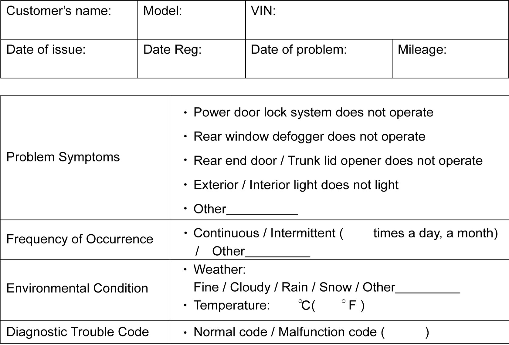

10B
| Body Electrical Control System Check |
Step 1: Customer Complaint Analysis
Record details of problem (failure, complaint) and how it occurred as described by the customer.
For this purpose, such a questionnaire form shown below will facilitate collecting information for proper analysis and diagnosis.
Customer questionnaire form (Example)

 "Expand image")
Step 2: DTC Check
Check DTC stored in BCM memory. 
In case that current DTC is detected:
Perform applicable DTC troubleshooting for current DTC and repair or replace faulty parts.
In case that history DTC is detected:
1)Record DTC and then clear DTC once.
2)Perform Step 3: Trouble Symptom Confirmation.
3)Referring to “circuit diagram” and “trouble area” in applicable DTC troubleshooting, check related parts that are prone to cause intermittent trouble (e.g. wire harness, connector, etc.) for detected history DTC.
4)Check intermittent trouble.
NOTE:
Never perform DTC troubleshooting.
In case that there is no DTC:
1)Perform Step 3: Trouble Symptom Confirmation.
2)If there is “Symptom Diagnosis” procedure for any possible cause, perform corresponding “Symptom Diagnosis” procedure.
NOTE:
“Symptom Diagnosis” procedures for body electrical control system are described in each section.
Step 3: Trouble Symptom Confirmation
Check if what customer claimed in “Customer Questionnaire” is actually found in vehicle and if that symptom is found. (This step should be shared with customer if possible.) Also, check if DTC is detected or not.
Step 4: Final Confirmation Test
Check that the problem symptom has gone and body electrical control system is free from any abnormal conditions. If what has been repaired is related to malfunction DTC, recheck DTC and check that no DTC is indicated.